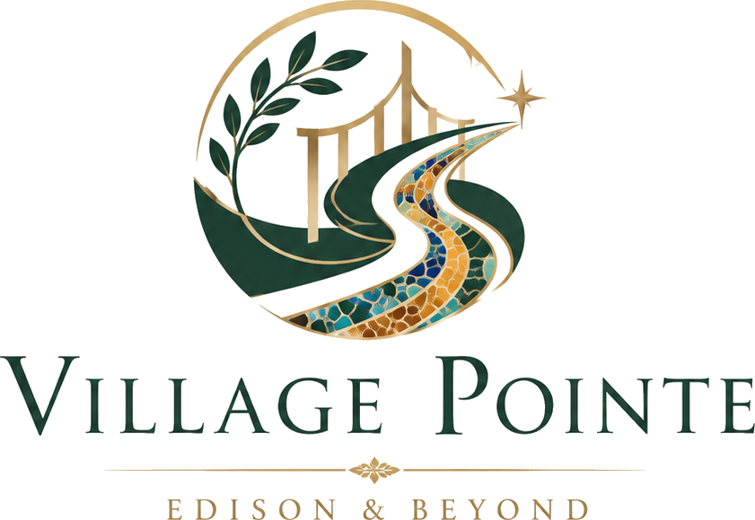

Public Information
The site should publish information appropriate for a public audience and avoid private owner or resident data.
VillagePointe.org is a privately owned, independently operated information resource centered on Village Pointe and Edison, with useful coverage that continues well beyond both.
VillagePointe.org is a privately owned, independent information resource created for residents, owners, prospective residents, buyers, renters, investors, professionals, visitors, and anyone exploring Village Pointe, Edison, and the surrounding region.
Village Pointe remains an important part of the site, but the scope is intentionally broader. Information may extend to Edison, Middlesex County, New Jersey, New York City, Philadelphia, transportation, airports, rail, roads, travel, public services, local businesses, housing, shopping, recreation, dining, and everyday living.
The site is not affiliated with, authorized by, endorsed by, sponsored by, controlled by, or operated on behalf of the Village Pointe Condominium Association, its Board, property management, Edison Township, or any other organization referenced here. Information is assembled in good faith for general informational, educational, reference, general interest, and entertainment purposes. It may change, become outdated, contain errors, or differ from information maintained by the responsible source.
For information that matters, verify it at the source.

The site should publish information appropriate for a public audience and avoid private owner or resident data.
Independent ownership and nonaffiliation are stated clearly while the site remains focused on useful information rather than repetitive legal messaging.
Important operational, legal, financial, property, school, and travel facts should be checked with current official sources.
The design and writing are intended to be culturally inclusive, accessible, sophisticated, and useful across demographics.
It does not speak for the condominium association, board, management, municipality, school district, or any government agency.
It does not collect account information, payments, access codes, maintenance reports, legal notices, or confidential documents.
It does not provide legal, financial, engineering, inspection, tax, medical, real estate, or investment advice.
Provider links, property information, travel access, and external resources can change and do not constitute endorsements or guarantees.
The site is designed to grow one useful subject at a time while keeping information organized, searchable, and connected to reliable sources.
Community information, homes, resident contacts, practical resources, and local context.
Government, schools, public services, shopping, transportation, and everyday resources.
Airports, rail, roads, New York City, Philadelphia, Washington, and Northeast connections.
Community scenes, nearby places, regional destinations, and useful visual context as the site expands.
Explore Views & Beyond